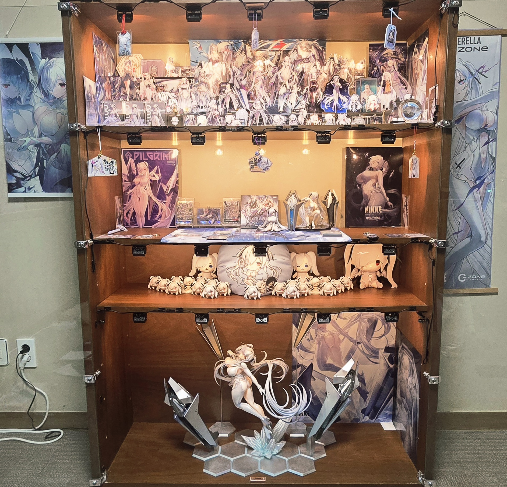
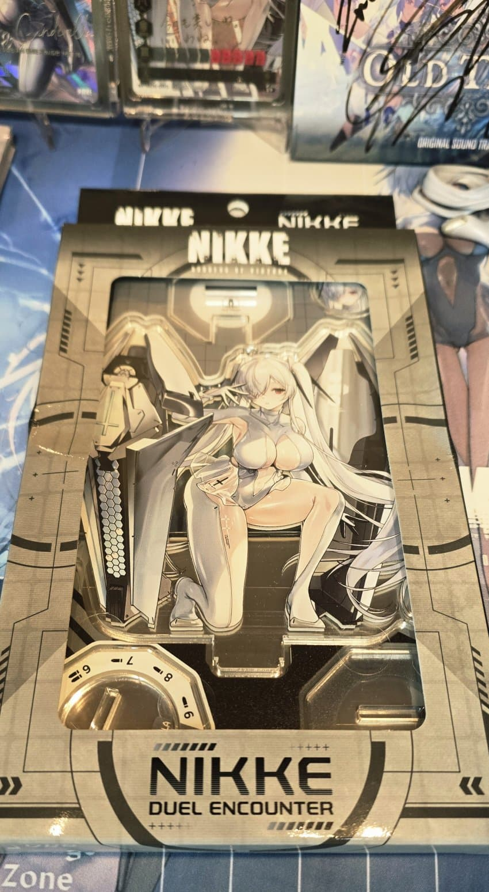
오늘 리뷰할 굿즈는 바로...
니케 듀얼 인카운터 NK-0026 신데렐라
이전 비매품 상품들을 리뷰했었고 오늘은 본제품을 개봉해도록하겠다!
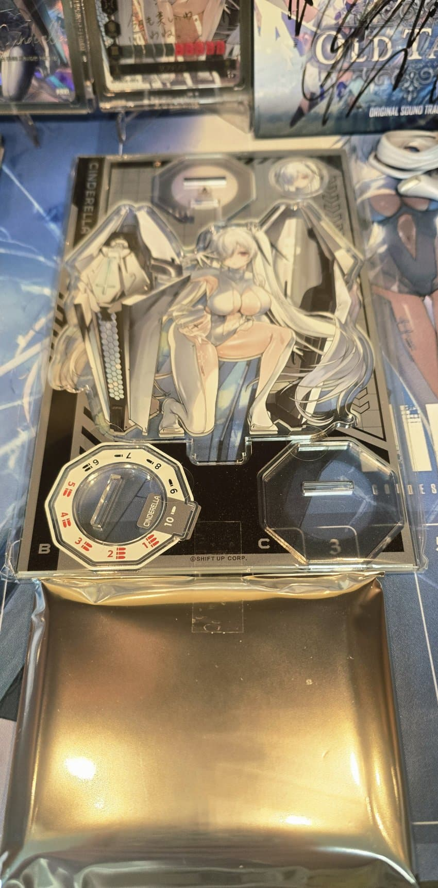
박스에서 꺼내면 이런식으로 구성되어있고
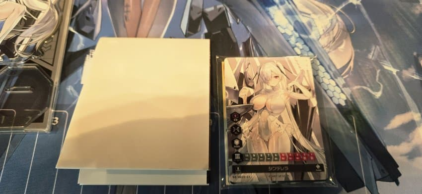
비닐 포장지를 열면 니케 듀얼 인카운터 플레이를 위한 종이로 된 플레이 판이랑 카드들이 동봉되어있음
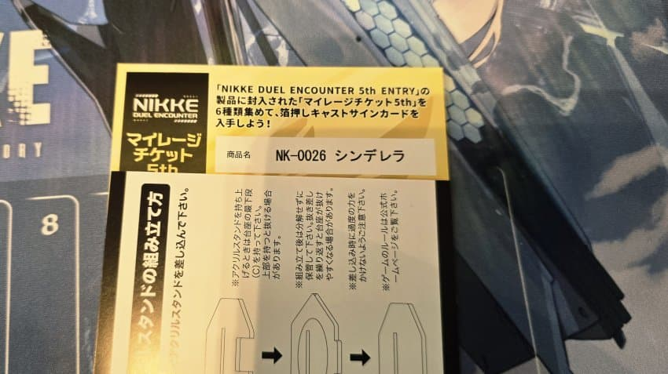
5탄 시리즈 전종 구매해 코드를 입력하면 응모할 수 있는데 렐루만 필요한 니붕이가 있다면 코드 보내줄게
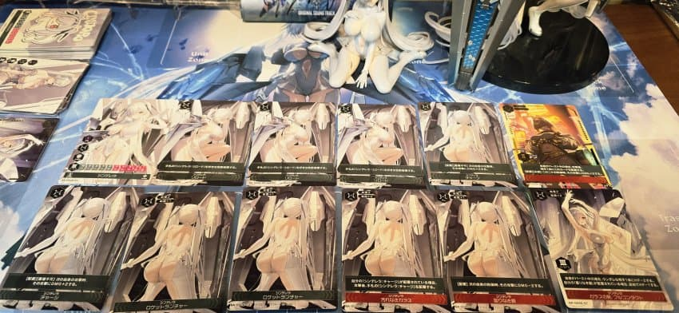
카드는 총 12장...원래 12장이였나?
여튼 일레그 레어 버스트 카드가 나왔다!
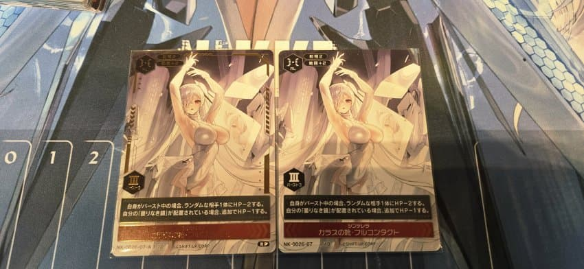
기본 버스트카드랑 레어 버스트 카드 어떤 차이냐?
금박이 있냐 없냐 차이밖에 없음
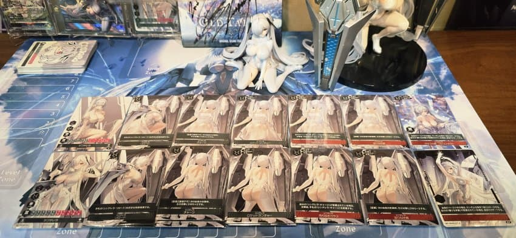
이전 비매품 리뷰했던 렐루 유리공주 버전과도 비교
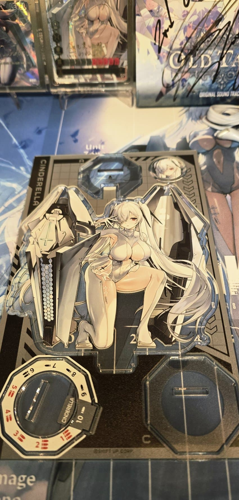
그럼 아크릴 스탠드를 조립해보겠다!
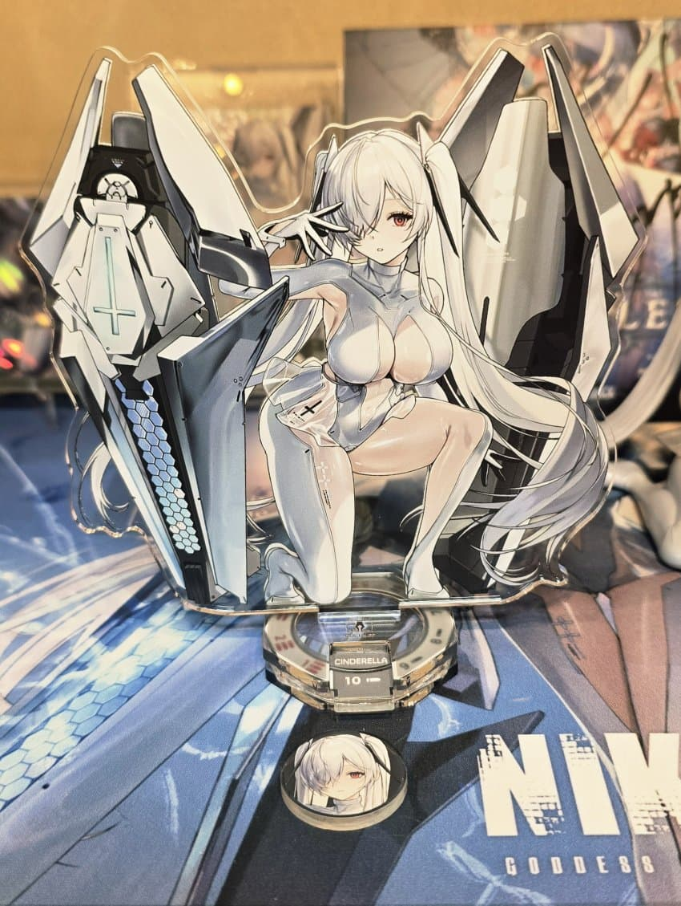
확실히 이제 몇번 조립해봤다고 손맛도 익숙해졌다!
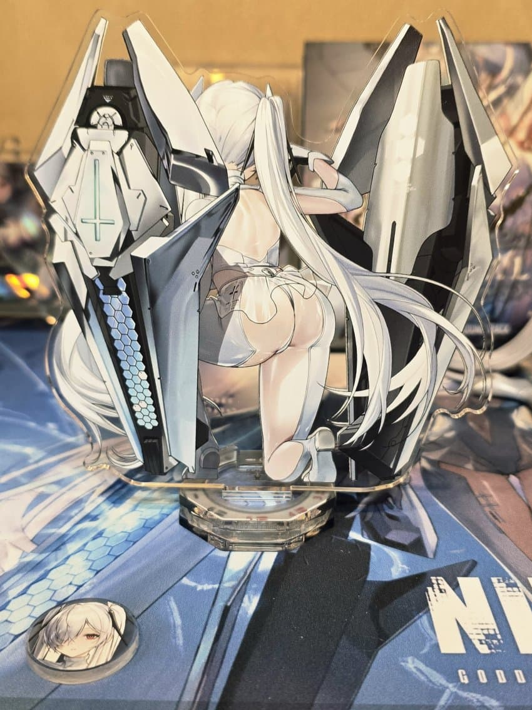
뒷면은 이렇게 생김
확실히 오리지널 일러스트 공식 굿즈가 맛있어!
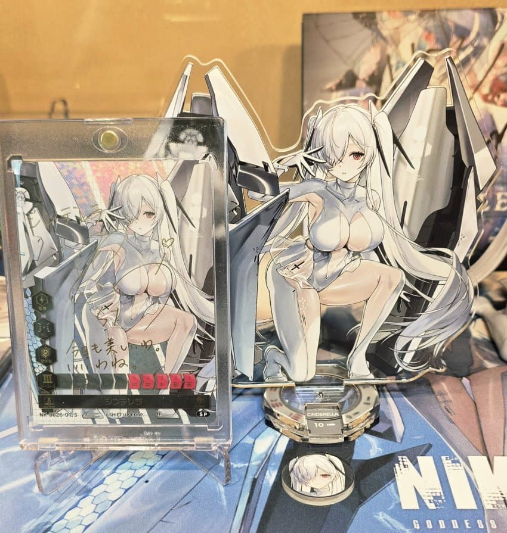
참고로 이전 리뷰했던 비매품 렐루 싸인 카드 일러스트가 이 일러스트임
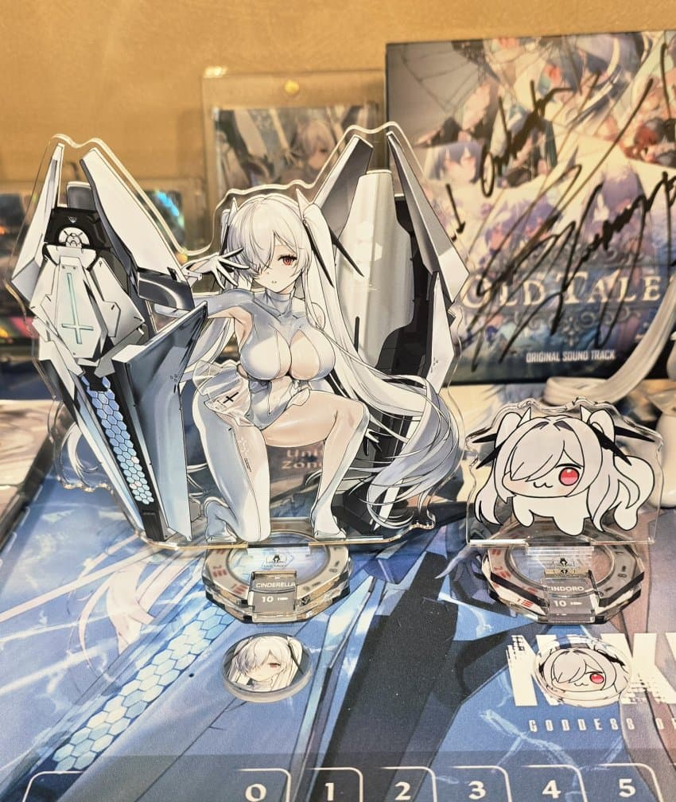
렐로롱과도 비교하고
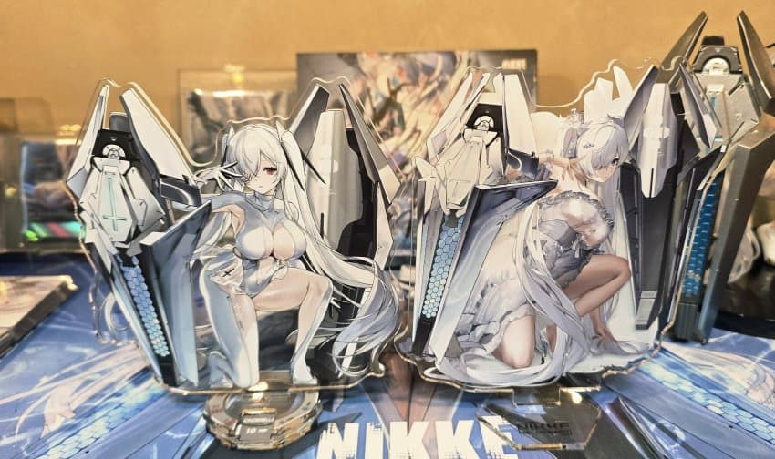
비매품 유리공주 아크릴스탠드와도 비교해봤다
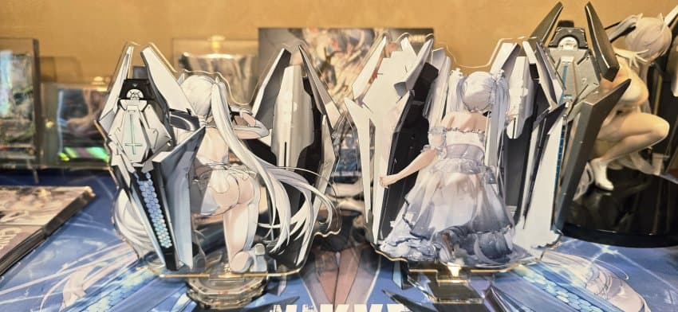
대체 이게 뭐라고 싶은 생각도 있겠지만 굿즈가 다 이렇다;
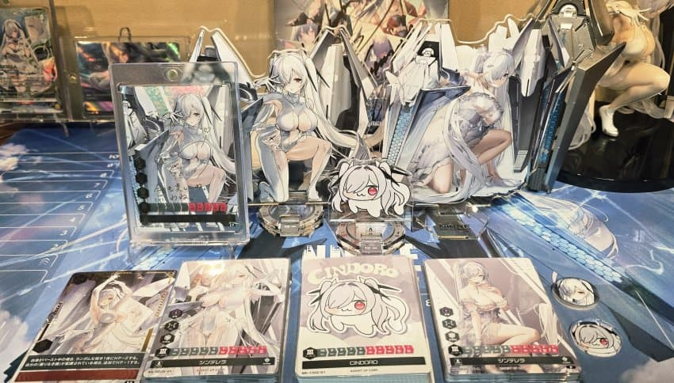
아무튼 이러튼 저러튼 니케 듀얼 인카운터 모든 렐루들을 리뷰했다!
솔직히 수집하기 가장 걱정했던 굿즈 중 하나였고 이걸 모아야하나 고민도 했던만큼 겁나기도 했음
그래도 이렇게 한꺼번에 모아놓고 보니 예쁘긴하노
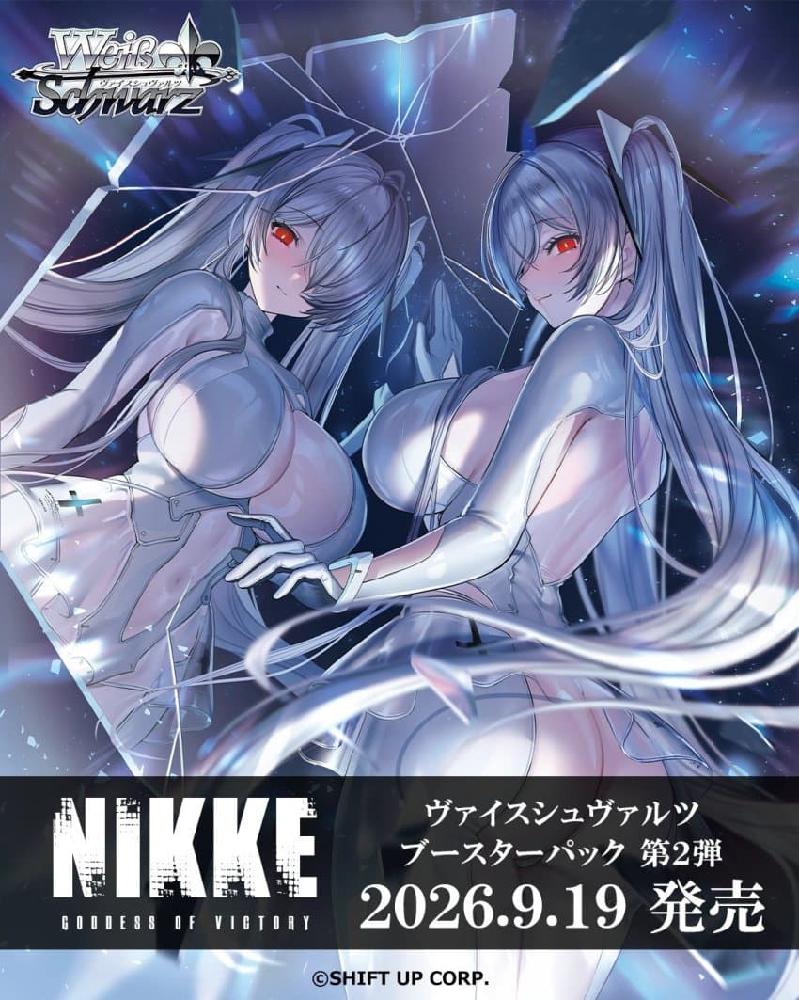
이제 남은건 바이스슈발츠인데 얘는 또 어케 나올지 모르겠네;
제발 좀 쉽게 가자...
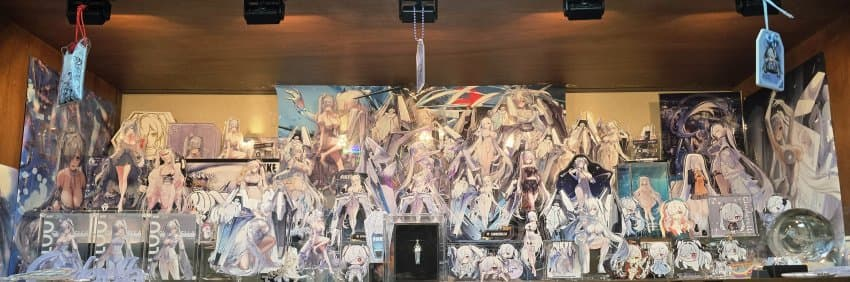
로손 굿즈 마저 도착하면 렐루장은 전체적으로 다시 배치를 바꿀 예정이다 좆같노;
공간이 터진다고 하기엔 다시 재배열 해야할듯...